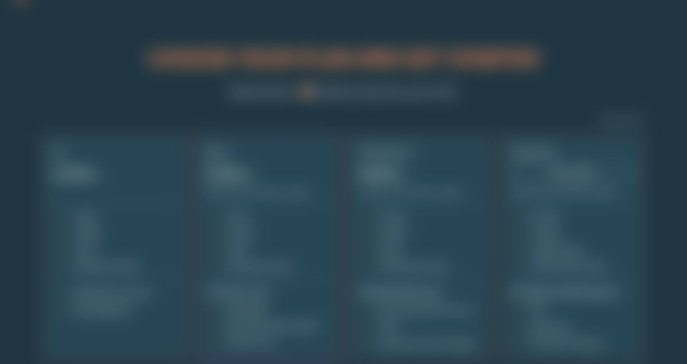
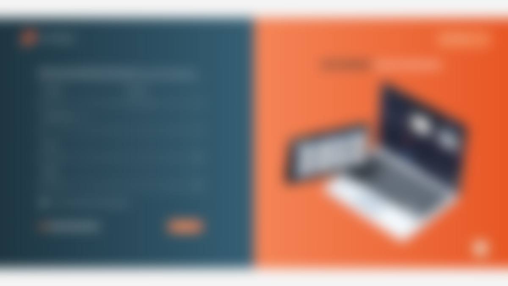
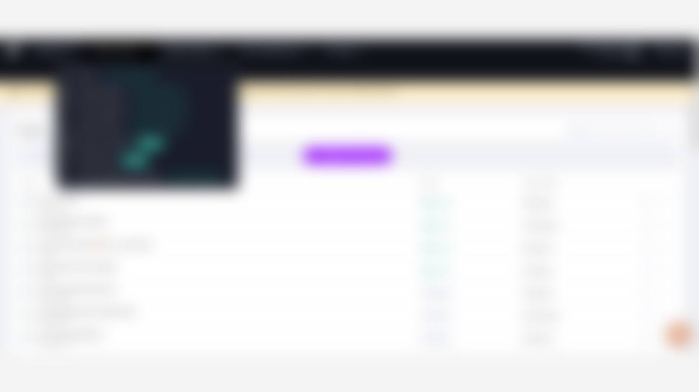
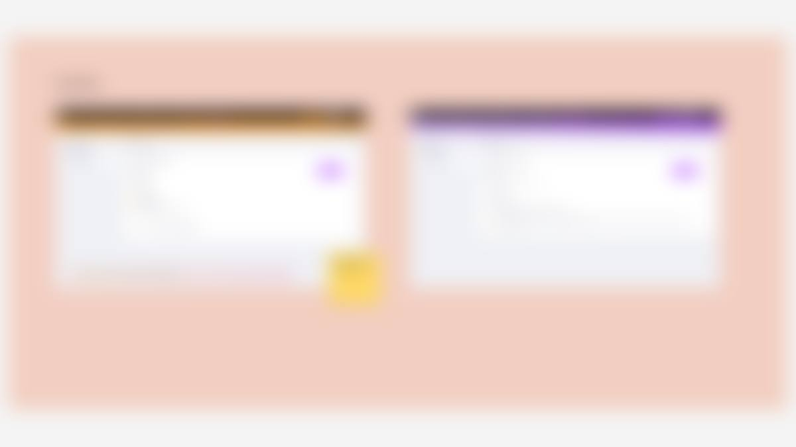

Viz Flowics (Vizrt) · Product Design · 2024–2025
Product-Led Growth
Transformación de un modelo comercial basado íntegramente en ventas asistidas a una experiencia self-serve para una plataforma SaaS B2B de gráficos en vivo para broadcast: pricing público, free trial sin tarjeta, feature gating y gestión autónoma de la suscripción.
🔒 Imágenes desenfocadas por confidencialidad — proyecto bajo NDA.
Única diseñadora
del proyecto
Lideré el diseño de punta a punta, desde el research hasta el handoff a desarrollo, en un equipo multidisciplinario con Product Manager, desarrollo y ventas. Un año de trabajo y ocho meses de seguimiento de resultados posteriores al lanzamiento.
1,05%
tasa de conversión del funnel original, dependiente de ventas
15
usuarios en las pruebas del nuevo flujo previas al lanzamiento
x3
altas de free trial tras el lanzamiento self-serve
+30%
leads calificados que llegan a ventas con conocimiento previo del producto

🔒 Bajo NDA01
Contexto
Un producto escalable con un modelo comercial que no lo era
Viz Flowics no contaba con pricing público ni con una forma de probar el producto sin una conversación previa con ventas. Cada lead atravesaba el mismo embudo extenso, con independencia del tamaño de la cuenta o de la urgencia real de la necesidad.
El resultado: una tasa de conversión del 1,05% y un ciclo de venta que alejaba a los equipos más pequeños, precisamente el segmento de mayor crecimiento en el mercado.
El objetivo fue que una productora pudiera descubrir, evaluar, contratar y administrar la plataforma de forma autónoma, sin perder el canal de ventas para las cuentas enterprise.
02
Estrategia
Cuatro frentes para habilitar el modelo self-serve
El proyecto abarcó todo el recorrido del cliente, desde la primera visita al sitio hasta la gestión de la suscripción dentro de la plataforma:
03
Pricing y alta
Una decisión de compra que no requiere hablar con ventas
Diseñé la página de pricing con cuatro planes (Go, Basic, Professional y Enterprise) organizados de forma incremental: cada plan explicita lo que suma respecto del anterior. Una matriz comparativa completa, los add-ons y una sección de preguntas frecuentes responden las dudas que antes resolvía el equipo comercial.
El alta del free trial se resolvió en un formulario breve, con indicador de progreso y campos opcionales, para reducir el abandono en el primer contacto con el producto.

🔒 NDAAlta del free trial: datos mínimos, indicador de progreso y aceptación de términos en un único paso.
04
Feature gating
Mostrar el valor del siguiente plan, sin ocultarlo
Definí un sistema de indicadores visuales que acompaña al usuario dentro del producto: badges por plan (Basic, Professional), etiquetas de add-on y tooltips que explican desde qué plan está disponible cada funcionalidad. El mismo criterio se aplicó a la asignación de roles, una capacidad exclusiva del plan Professional.
La premisa fue que cada limitación funcionara como una oportunidad de upgrade comprensible, y no como un bloqueo sin contexto.

🔒 NDAIndicadores por plan en la navegación y selector de roles restringido en planes inferiores a Professional.
05
Ciclo de vida
Cada estado de la suscripción, diseñado para cada tipo de usuario
Mapeé todos los estados posibles de la cuenta (free trial, free plan, plan pago cancelado, problema de pago y pago vencido) y diseñé cada uno en dos variantes: para quien tiene permiso de gestionar el plan y para quien no. El administrador accede a la acción correctiva; el resto del equipo recibe una indicación clara de a quién recurrir.
Matriz de estados de suscripción: usuarios con permiso de gestión del plan (arriba) y sin ese permiso (abajo).
Al finalizar el trial, la cuenta pasa a un free plan en el que puede permanecer. Por eso, en lugar de advertir cuántos días transcurrieron desde el vencimiento, la interfaz comunica el nuevo estado y sus implicancias concretas: usuarios, equipos, almacenamiento y salidas con marca de agua.

🔒 NDAExploración del estado Free Plan: banner persistente y detalle de los límites del plan.
06
Upselling
Los límites del plan como punto de conversión
Cuando una cuenta alcanza el límite de equipos o de usuarios, el mensaje explica el beneficio de ampliar el plan y deriva a la gestión de la suscripción. Si quien lo encuentra no tiene permisos de administración, el mensaje lo orienta a contactar al administrador de la cuenta, sin exponer acciones que no puede ejecutar.
El mismo criterio de permisos se extendió al onboarding: un usuario invitado que se registra por su cuenta es detectado y vinculado directamente a la cuenta paga de su organización, evitando cuentas duplicadas.
Límite de equipos alcanzado: variante para administradores (arriba) y para usuarios sin permiso de gestión (abajo).
07
Validación e impacto
Validado antes del lanzamiento, medido después
Antes del lanzamiento público, presentado en NAB Show Las Vegas en abril de 2025, evalué el nuevo flujo de compra con 15 usuarios e iteramos sobre fricciones puntuales: campos innecesarios, pasos redundantes y momentos sin feedback claro. Tras el lanzamiento, el equipo realizó un seguimiento de resultados durante ocho meses.
x3
altas de free trial respecto del modelo anterior.
+30%
leads calificados, que llegan al primer contacto conociendo el producto y el pricing.
El modelo self-serve no reemplazó al equipo comercial: lo volvió más eficiente. Las conversaciones de venta comenzaron a partir de un conocimiento previo del producto, del plan adecuado y de su costo.
08
Rol y criterios
Rol y criterios de diseño
Como única diseñadora del proyecto, fui responsable de la investigación, la definición de la experiencia, el diseño de interfaz y el handoff a desarrollo, en coordinación con producto, ingeniería y ventas.
- Pensamiento sistémico. Cada estado de cuenta y cada límite de plan se diseñó para todas las combinaciones de plan y permiso.
- Transparencia como estrategia de conversión. Mostrar lo que desbloquea cada plan en lugar de ocultarlo.
- Validación antes del lanzamiento. Pruebas con usuarios reales e iteración sobre fricciones concretas del flujo de compra.
- Medición sostenida. Ocho meses de seguimiento para evaluar el impacto real en el negocio.
En retrospectiva: impulsaría una alineación más temprana entre ventas y producto sobre lo que el usuario necesita, por encima de lo que un producto de nicho ya tenía establecido.